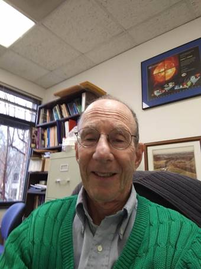

|
 |
Arthur I. Poland Department of Physics and
Astronomy George Mason University Fairfax VA Phone: (703) 993-8404 Home (540) 222-1940 Arthur.I.Poland |
EDUCATIONAL BACKGROUND:
BS 1964 Astronomy, University of Massachusetts
PhD 1969 Astrophysics, Indiana University
POSITIONS:
2003- present: Affiliate Professor, Departmenet
of Physics and Astronomy, Department of Computational and Data Sciences,George Mason University
1980-2003: Astrophysicist, NASA, Goddard Space Flight Center, Greenbelt MD
1969-1980: Scientist, High Altitude Observatory, National Center for
Atmospheric Research, Boulder CO.
BRIEF BIO:
Dr. Poland graduated with Honors in Astronomy from the University of Massachusetts in 1964. After receiving his Ph.D. degree in Astrophysics from Indiana University in 1969, he joined the staff at the High Altitude Observatory (HAO) of the National Center for Atmospheric Research (NCAR) in Boulder Colorado. There he worked on problems of energy balance and non-local thermodynamic equilibrium (non-LTE) in the solar atmosphere. He also joined the HAO Skylab team to work on the White Light Coronagraph experiment. He joined the GSFC research team in 1980 and worked on the UVSP experiment on the Solar Maximum Mission. In 1986 he became the U.S. Project Scientist for the Solar and Heliospheric Obervatory. From 1999 to 2003 he was the Senior Project Scientist for the Living With A Star Program, which is designed to study and understand the impacts of the Sun on Earth Systems. He is currently working in the School of Computational Sciences at George Mason University developing a graduate degree program in Space Weather.
RESEARCH INTERESTS:
Research interests include energy transport processes in the solar atmosphere involving radiative transfer, hydrodynamic modeling, and the use of observational data (especially spacecraft data) to provide boundary conditions and predicted observables. The development of ultraviolet and extreme ultraviolet detectors is also a major interest.
The current work on which Dr. Poland is primarily involved can be seen at the SOHO http://soho.nascom.nasa.gov home page and at the Living With A Star home page http://lws.gsfc.nasa.gov
AWARDS
He received the NCAR Technology Advancement Award, 1973, GSFC Exceptional
Achievement Award, 1996, an ESA SOHO Award,
1995, and a NASA Medal for Exceptional Service, 1998.
PROFESSIONAL SPECIALITY:
Radiative transfer, hydrodynamic modeling, satellite data reduction and analysis.
MAJOR PROJECT/SERVICE RESPONSIBILITIES:
U.S. Project Scientist for SOHO, 1985-1998
Senior Living With A Star Project Scientist, 1999-2003
AFFILIATIONS:
AAS
Sigma Xi
IAU
AGU
SELECTED PUBLICATIONS
H. R. Johnson and A. I. Poland, "Neutral Helium Lines
and Departures from LTE in Hot Stars," J. Quant Spectrosc.
Radiat.
Transfer, 9, pp. 1151-1165, 1969.
A. I. Poland, "Neutral Helium Lines and the Helium
Anomaly in Hot Stars," Astrophys. J., 160, p. 609, 1970.
Charles F. Keller, Bernard V. Jackson, A. I. Poland, and Benjamin F. Peery,
Jr., "The Rotational Temperature of a Ti O in
the Spectrum of R. Hydrac," Astronomy and Astrophys.,
4, p. 415, 1970.
A. I. Poland, A. Skumanich, R. G. Athay,
and E. Tandberg-Hanssen, "Hydrogen Ionization and n=2 Population for Model
Spicules and Prominences," Solar Physics, 18, p. 391, 1971.
A. I. Poland and U. Anzer,
"Energy Balance in Cool Quiescent Prominences," Solar Physics, 19, p.
401, 1971.
A. I. Poland, "Helium in Hot Stars," The
Observatory, 92, No. 986, p. 17, 1972.
R. M. MacQueen, J. A. Eddy, J. T. Gosling, E. Hildner, R. H. Munro, G.A. Newkirk, Jr., A. I. Poland, and
C. L. Rose, "The Outer Solar Coronal as Observed from Skylab," Astrophys. J., 187, p. L85, 1974.
R. M. MacQueen, J. T. Gosling, E. Hildner,
R. H. Munro, A. I. Poland, and C. L. Ross, "The High Altitude Observatory
While Light Coronagraph," Proceedings on Instrumentation in Astronomy, 44,
p. 207, 1974.
J. T. Gosling, E. Hildner, R. M. MacQueen,
R. H. Munro, A. I. Poland, and C. L. Ross, "Mass Ejections from the Sun: A
View from Skylab," J. Geophy. Res.,
79, p. 4581, 1974.
R. M. MacQueen, J. T. Gosling, E. Hildner,
R. H. Munro, and A. I. Poland, "The High Altitude Observatory White Light
Coronagraph Experiment," Coronal Disturbances, IAU ed., Gordon Newkirk,
Jr., pp. 505-506, 1974.
R. H. Munro, J. T. Gosling, E. Hildner, R. M. MacQueen, A. I. Poland, and C. L. Ross, "Observations
of Flare Associated Coronal Dynamics Above 2Ro," Manuscripts presented at
the conference on Flare Related Magnetic Field Dynamics, Boulder, Colorado,
23-25, September 1974.
J. N. Heasley, Dimitri Mihalas, and A. I. Poland, "Theoretical Helium I
Emission Line Intensities for Quiescent Prominences," Astrophys.
J., 192, pp. 181, 1974.
A. I. Poland and J. T. Gosling, "Reticulation: Effects and Cure," AAS
Photo Bulletin No. 2, 9, 1975.
J. T. Gosling, E. Hildner, R. M. MacQueen,
R. H. Munro, A. I. Poland, and C. L. Ross, "Direct Observations of a Flare
Related Coronal and Solar Wind Disturbance," Solar Physics, 40, p. 439,
1975.
E. Hildner, J. T. Gosling, R. M. MacQueen,
R. H. Munro, A. I. Poland, and C. L. Ross, "The Large Coronal Transient of
10 June 1973: I. Observational Description," Solar Physics, 42, p. 163,
1975.
R. H. Munro, J. T. Gosling, E. Hildner, A. I. Poland,
C. L. Ross, and Alison Hopfield, "A Search for Forward Scattering of
Sunlight from Lunar Liberation Clouds," Planet. Space
Sci., 23, p. 1313, 1975.
J. T. Gosling, E. Hildner, R. H. Munro, A. I. Poland,
and C. L. Ross, "Initial Results from the High Altitude Observatory White
Light Coronagraph on Skylab--A Progress Report," Proc. Royal Soc. of
London, 281, pp. 405-414, 1975.
J. T. Gosling, E. Hildner, R. M. MacQueen,
R. H. Munro, A. I. Poland, and C. L. Ross, "The Speeds of Coronal Mass
Ejection Events," Solar Phys., 389, 1976.
A. I. Poland and R. H. Munro, "Interpretation of Broad-Band Polarimetry of
Solar Coronal Transients: Importance of H Emission," Astrophys.
J., 209, pp. 927-934, 1976.
J. T. Gosling, R. H. Munro, A. I. Poland, and C. L. Ross,
"Frequency of Coronal Transients and Solar Activity," Solar Physics,
48, p. 127, 1976.
A. Csoeke-Poeckh, R. M. MacQueen,
and A. I. Poland, "Measurement of Stray Radiance in the High Altitude
Observatory's Skylab Coronagraph," Applied Opt., 16, p. 931, 1977.
A. I. Poland, J. T. Gosling, R. M. MacQueen, and R.
H. Munro, "The Radiance Calibration of the High Altitude Observatory White
Light Coronagraph on Skylab," Applied Opt, 16, p. 926, 1977.
R. M. MacQueen and A. I. Poland,
"Temporal Evolution of the Equatorial K-Corona," Solar Physics, 55,
p. 43, 1977.
Kuniji Saito, A. I. Poland, and Richard H. Munro,
"A Study of the Background Corona Near Solar
Minimum," Solar Physics, 55, p. 121, 1978.
A. I. Poland, "Motions and Mass Changes of a Persistent
Coronal Streamer," Solar Physics, 57, p. 141, 1978.
T. Ch. Mouschovias and A. I. Poland, "Expansion
and Broadening of Coronal Loop Transients: Theoretical Explanation," Ap.
J., 220, p. 675, 1978.
T. E. Gergely, M. R. Kundu,
R. H. Munro, and A. I. Poland, "Radio and White Light Observations of the
21 August 1973 Coronal Transient," Ap. J., 230, p. 575, 1979.
U. Anzer and A. I. Poland, "Mass Flow in Loop
Type Coronal Transients," Solar Phys, 61, p. 95, 1979.
R. H. Munro, J. T. Gosling, E. Hildner, R. M. MacQueen, A. I. Poland, and C. L. Ross, "The
Association of Coronal Transients with other Forms of Solar Activity,"
Solar Physics, 61, p. 2201, 1979.
N. R. Sheeley, R. A. Howard, M. J. Kooman, D. J. Michaels, and A. I.Poland,
"The Observation a High-Latitude Coronal Transient," Ap. J. Let.,
238, p. L161, 1980.
R. R. Fisher, R. Lee, R. M. MacQueen, and A. I.
Poland, "The New Mauna Loa Coronagraph Systems," Applied Optics, Vol.
20, No. 6, p. 1094, 1981.
A. I. Poland and R. M. MacQueen,
"The Evolution of a Coronal Streamer and the Photospheric
Magnetic Field," Solar Physics, 71, pp. 361-379, 1981.
A. I. Poland, R. A. Howard, M. J. Kooman, D. J. Michels, and N. R. Sheeley, Jr.,
"Coronal Transients Near Sunspot Maximum,"
Solar Physics, 69, p. 69, 1981.
R. R. Fisher and A. I. Poland, "Coronal Activity Below
2 R February 15-17, 1980," Ap. J., 246, p. 1004, 1981.
A. I. Poland and A. Skumanich, "NonLTE Effects for He I in Early B. Type Stars," Mon
Not. Royal Astron. Soc., 152, p. 18, 1981.
A. I. Poland, M. E. Machado, C. J. Wolfson, K. J. Frost, B. E. Woodgate, R. A.
Shine, P. J. Kenny, C. C. Cheng, E. A. Tandberg-Hanssen, and E. C. Bruner, and
W. Henze, "The Impulsive and gradual Phases of a
Solar Limb Flare as Observed from the Solar Maximum Mission Satellite,"
Solar Physics, 78, p. 201, 1982.
A. I. Poland, "Ultraviolet Observations of Solar
Flares," The Observatory 102, No. 1049, p. 123, 1982.
A. I. Poland and E. Tanberg-Hanssen,
"Physical Conditions in a Quiescent Prominence Derived from UV Spectra
Obtained with the UVSP Instrument on the SMM," Solar Physics, 84, pp. 63-70,
1983.
B. E. Woodgate, R. A. Shine, A. I. Poland, and L. E. Orwig,
"Simultaneous Ultraviolet Line and Hard X-ray Bursts in the Impulsive
Phases of Solar Flares," Ap. J., 265, p. 530, 1983.
S. T. Wu, S. Wang, M. Dryer, A. I. Poland, D. G. Sime, C. J. Wolfson, L. Orwig, and A. Maxwell, "Magnetohydrodynamic
Simulation of the Coronal Transient Associated with the Solar Limb Flare of
1980 June 229, 28:221 UT," Solar Physics, 85, p. 351, 1983.
K. T. Strong, A. Benz, B. Dennis, J. W. Leibacher, R.
Mewe, A. I. Poland, J. A. Schrijver,
G. Simnett, J. B. Smith, Jr., and J. Sylwester, "A Multiwavelength
Study of a Double Impulsive Flare," Solar Physics, 91, p. 325, 1984.
A. I. Poland, L. E. Orwig, J. T. Mariska, R. Nakatsuka,
and L. H. Auer, "The Energy Relation Between Hard X-ray and OV Emission in
Solar Flares," Ap. J., 280, p. 457, 1984.
J. T. Mariska and A. I. Poland, "The Relation Between
Hard X-ray and Transition-Region Line Emission Solar Flares," Solar Physics,
96, p. 317, 1985.
J. G. Doyle, P. Byrne, B. R. Dennis, A. G. Emslie, A. I. Poland, and G. Simnett, "Energetics of a Double Flare on November 8,
1980," Solar Physics, 98, p. 141, 1985.
B. Schmieder, J. M. Malherbe, A. I. Poland, and G.
Simon, "Dynamics of Solar Filaments IV. Structure and Mass Flow of an
Active Region Filament," Astronomy and Astrophysics, 53, p. 64, 1985.
A. I. Poland and J. T. Mariska, "A Siphon Mechanism for
Supplying Prominence Mass," Solar Physics, 104, p. 300, 1986.
G. Simon, B. Schmieder, P. Demouline,
and A. I. Poland, "Dynamics of Solar Filaments VI. Center
to Limb Study of H and CIV Velocities in a Quiescent Filament," Astronomy
and Astrophysics, 166, p. 219, 1986.
B. Schmieder, A. I. Poland, B. Thompson, and P. Demoulin, "Some Dynamical Aspects of a Quiescent
Filament," Astronomy and Astrophysics, 197, p. 81, 1988.
A. I. Poland, R. W. Milkey, and W.
T. Thompson, "Hydrogen and Helium Excitation by EUV Radiation for the
Production of White-Light Flares," Solar Physics, 115, p. 277, 1988.
"The SOHO Project: Helioseismology Investigations," V. Domingo and
A.I. Poland, Adv. Space Res. 8 no. 11, p. 119, 1988.
"The SOHO Project: Coronal and Solar Wind
Investigations," A. I. Poland and V. Domingo, Adv. Space Res. 8 no 11, p.
101, 1988.
J. M. Fontenla and A. I. Poland,
"The Eruption of a Quiescent Prominence as Observed in UV Lines,"
Solar Physics, 123, p. 143, 1989.
Paul M. Kuin and A. I. Poland,
"Opacity Effects on the Radiative Losses of Coronal Loops,"
Astrophysical Journal (370, 763, 1991).
A. I. Poland, "Coronal Fine Structure as Seen on the Skylab White Light Coronograph, "Solar Dynamics Phenomena and Solar Wind
Consequences, ESA SP-373, p. 227, 1994.
Effects of Non-LTE Radiative Loss and Partial Ionization on
the Structure of the Transition Region, J.-C. Chae,
H.S. Yun, and A. I. Poland, ApJ 480, 817-824, May 10
1997.
The SOHO Mission: An Overview, V. Domingo, B. Fleck, and A.I. Poland, Solar
Physics 162, pg 1, 1995
The Sun as Never Viewed Before, A.I. Poland, EOS, Transactions, American
Geophysical Union vol 78, no. 13, April 1, 1997
High-Resolution Observations of the Extreme Ultraviolet Sun, R.A.Harrison, A.Fludra, C.D.Pike, J.Payne,W.T.Thompson,
A.I.Poland, E.R.Breeveld, A.A.Breeveld, J.L.Culhane, O.Kjeldseth-Moe, M.C.E.Huber, and
B.Aschenbach, Solar Physics 170, 123, 1997.
First Results of the SUMER Telescope and Spectrometer - Solar
Ultraviolet Measurements of Emitted Radiation - on SOHO, (II) Images and Data
Management. Lemaire, P., K. Wilhelm, W. Curdt, U. Schuehle, E. Marsch, A.I. Poland, S.D. Jordan, R.J.Thomas,
D.M. Hassler, J.-C. Vial, M. Kuehne, M.C.E. Huber,
O.H.W. Siegmund, A.Gabriel,
J.G. Timothy, and M. Grewing: Solar Physics 170,
105-122, 1997
Eruptive Prominence and Associated CME Observed with SUMER, CDS and
LASCO(SOHO), Wiik, J.E., Schmieder,
B., Kucera, T., Poland, A., Brekke,
P., Simnett, G., : Solar Physics 175.2 p.
411-436,1997
First Results of the SUMER Telescope and Spectrometer - Solar Ultraviolet Measurements
of Emitted Radiation - on SOHO, (I) Spectra and Spectroradiometry,
Wilhelm, K., P. Lemaire, W. Curdt,
U. Schuehle, E. Marsch,
A.I. Poland, S.D. Jordan, R.J.Thomas, D.M. Hassler,
M.C.E. Huber, J.-C. Vial, M. Kuehne, O.H.W. Siegmund, A.Gabriel, J.G.
Timothy, M.Grewing, U. Feldman, J. Hollandt, and P. Brekke: 1997,
Solar Physics 170, 75-104
SUMER - Solar Ultraviolet Measurements of Emitted Radiation, Wilhelm, K., W. Curdt, E. Marsch, U. Schuehle, P. Lemaire, A.H.
Gabriel, J.-C. Vial, M.Grewing, M.C.E. Huber, S.D.
Jordan, A.I. Poland, R.J. Thomas, M. Kuehne, J.G.
Timothy, D.M. Hassler, and O.H.W. Siegmund: Solar
Physics 162, 189-231 1995
Temperature Dependence of UV Line Average Doppler Shifts in the Quiet Sun, J. Chae, H.S. Yun, and A.I. Poland, Astrophysical Journal
Supp. vol 114 #1, Jan 1998.
Kucera, T.A., Andretta, A., Poland, A.I., Neutral
Hydrogen Column Depths in Prominences Using EUV Absorption Features, Solar
Physics (in press) 1999
Ofman, L., Kucera, T.A., Mouradian, Z., and Poland, A.I., Sumer Observations of the
Evolution and the Disappearance of a Solar Prominence, Solar Physics, 183, 97,
1998
Poland, A., The SOHO Mission, AGU Geophysical Monography Series, Vol. 109,
Burch & Antiochos Eds. 1999
Jungchul Chae ,
Arthur I. Poland, and Markus J. Aschwanden, Coronal
Loops Heated by MHD Turbulence: I. A Model of Isobaric Quiet Sun Loops with
Constant Cross-sections, ApJ 581,726, 2002
EDITED PROCEEDINGS:
Coronal and Prominence Plasmas, Edited by A. I. Poland, NASA CP 2442, 1986.
BOOKS:
The SOHO Mission, Edited by Bernhard Fleck, Vicente Domingo, and Arthur I. Poland, Kluwer Academic Publishers, 1995
Chapter in Annual Review of Astronomy and Astrophysics
The New Solar Corona, Markus J. Aschwanden, Arthur I.
Poland, and Douglas M. Rabin, Annual Review of Astronomy and Astrophysics, V
39, p175, Annual Reviews, 2001